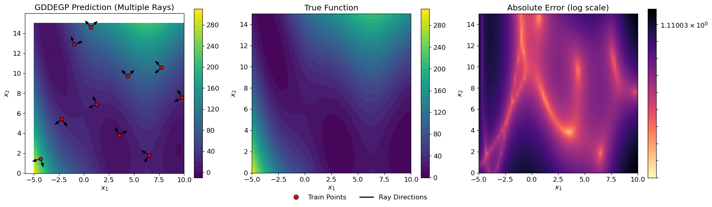

Generalized Directional Derivative-Enhanced Gaussian Process (GDDEGP)#
Overview#
The Generalized Directional Derivative-Enhanced Gaussian Process (GDDEGP) is an advanced variant of DEGP that utilizes pointwise directional derivatives where different directions can be specified at each training point. The “generalized” aspect refers to the flexibility in choosing different derivative directions across the training set, rather than using the same global directions everywhere.
This approach enables the model to:
Use different derivative directions at different training points
Adapt derivative directions based on local function behavior
Capture directional information where it is most informative
Provide more efficient learning with strategically placed derivative observations
GDDEGP is particularly powerful for:
Problems where optimal derivative directions vary across the domain
Scenarios where gradient directions are available (e.g., from optimization algorithms)
Functions with spatially varying anisotropic behavior
Active learning strategies that adapt derivative directions based on local information
Key Difference from DDEGP:
DDEGP: Uses the same set of directional rays at all training points (global directions)
GDDEGP: Allows different directional rays at each training point (generalized/pointwise directions)
—
Example 1: Generalized Directional GP with Gradient-Aligned Rays on the Branin Function#
Overview#
This example demonstrates Generalized Directional DEGP (GDDEGP) applied to the 2D Branin function. In this particular application, we use a single gradient-aligned direction at each training point, but the GDDEGP framework is general and can accommodate any number of derivatives with different directions at each location. The gradient alignment with one derivative per point is just one strategy for applying this generalized framework.
Key concepts covered:
Using different derivative directions at each training point (generalized approach)
Using one directional derivative per training point in this example
Computing analytical gradients using SymPy as one strategy for choosing optimal ray directions
Pointwise directional derivatives with location-specific directions
Training and visualizing the GDDEGP model with gradient-aligned rays
—
Step 1: Import required packages#
import numpy as np
import sympy as sp
from full_gddegp.gddegp import gddegp
from scipy.stats import qmc
from matplotlib import pyplot as plt
from matplotlib.colors import LogNorm
from matplotlib.lines import Line2D
import utils
plt.rcParams.update({'font.size': 12})
Explanation:
We import necessary modules including symbolic differentiation (sympy), the GDDEGP model, Latin Hypercube Sampling, and visualization tools.
—
Step 2: Set configuration parameters#
n_order = 1
n_bases = 2
num_training_pts = 20
domain_bounds = ((-5.0, 10.0), (0.0, 15.0))
test_grid_resolution = 100
normalize_data = True
kernel = "SE"
kernel_type = "anisotropic"
n_restarts = 15
swarm_size = 200
random_seed = 1
np.random.seed(random_seed)
Explanation: Configuration parameters for the GDDEGP model:
n_order=1: First-order directional derivativesnum_training_pts=20: Twenty training locationskernel="SE": Squared Exponential kernelImportant: In this example, each training point will have one single directional derivative aligned with its local gradient. However, GDDEGP can accommodate multiple derivatives per point with different directions if needed.
—
Step 3: Define the Branin function and its gradient#
# Define symbolic Branin function
x_sym, y_sym = sp.symbols('x y')
a, b, c, r, s, t = 1.0, 5.1/(4*sp.pi**2), 5.0/sp.pi, 6.0, 10.0, 1.0/(8*sp.pi)
f_sym = a * (y_sym - b*x_sym**2 + c*x_sym - r)**2 + s*(1 - t)*sp.cos(x_sym) + s
# Compute symbolic gradients
grad_x_sym = sp.diff(f_sym, x_sym)
grad_y_sym = sp.diff(f_sym, y_sym)
# Convert to NumPy functions
true_function_np = sp.lambdify([x_sym, y_sym], f_sym, 'numpy')
grad_x_func = sp.lambdify([x_sym, y_sym], grad_x_sym, 'numpy')
grad_y_func = sp.lambdify([x_sym, y_sym], grad_y_sym, 'numpy')
def true_function(X, alg=np):
"""2D Branin function."""
return true_function_np(X[:, 0], X[:, 1])
def true_gradient(x, y):
"""Analytical gradient of the Branin function."""
gx = grad_x_func(x, y)
gy = grad_y_func(x, y)
return gx, gy
Explanation: We define the Branin function symbolically using SymPy and compute its analytical gradient. The symbolic gradients are converted to fast NumPy-compatible functions. The gradient function returns the partial derivatives \(\frac{\partial f}{\partial x}\) and \(\frac{\partial f}{\partial y}\) at any point. In this example, we use these gradients to determine the direction for derivative observations at each training location. However, the GDDEGP framework is generalized and can work with any choice of pointwise directions—gradient alignment is just one effective strategy.
—
Step 4: Define arrow clipping utility#
def clipped_arrow(ax, origin, direction, length, bounds, color="black"):
"""Draw an arrow clipped to plot bounds."""
x0, y0 = origin
dx, dy = direction * length
xlim, ylim = bounds
tx = np.inf if dx == 0 else (
xlim[1] - x0)/dx if dx > 0 else (xlim[0] - x0)/dx
ty = np.inf if dy == 0 else (
ylim[1] - y0)/dy if dy > 0 else (ylim[0] - y0)/dy
t = min(1.0, tx, ty)
ax.arrow(x0, y0, dx*t, dy*t, head_width=0.25,
head_length=0.35, fc=color, ec=color)
Explanation: This utility function draws arrows representing gradient directions while ensuring they don’t extend beyond plot boundaries. This will be used for visualization to show the gradient-aligned directions at each training point.
—
Step 5: Generate training data with gradient-aligned derivatives#
def generate_training_data():
"""Generate GDDEGP training data using pointwise directional derivatives."""
# 1. Generate points using Latin Hypercube
sampler = qmc.LatinHypercube(d=n_bases, seed=random_seed)
unit_samples = sampler.random(n=num_training_pts)
X_train = qmc.scale(unit_samples,
[b[0] for b in domain_bounds],
[b[1] for b in domain_bounds])
# 2. Compute gradient-aligned rays at each training point
rays_list = []
for i, (x, y) in enumerate(X_train):
gx, gy = true_gradient(x, y)
# Normalize to unit vector
magnitude = np.sqrt(gx**2 + gy**2)
ray = np.array([[gx/magnitude], [gy/magnitude]])
rays_list.append(ray)
# 3. Compute function values at training points
y_func = true_function(X_train).reshape(-1, 1)
# 4. Compute directional derivatives using the chain rule
# For each point: d_ray = grad_x * ray[0] + grad_y * ray[1]
directional_derivs = []
for i, (x, y) in enumerate(X_train):
gx, gy = true_gradient(x, y)
ray_direction = rays_list[i].flatten()
# Directional derivative = gradient · direction
dir_deriv = gx * ray_direction[0] + gy * ray_direction[1]
directional_derivs.append(dir_deriv)
# Stack all directional derivatives into a single array
directional_derivs_array = np.array(directional_derivs).reshape(-1, 1)
# 5. Package training data
# y_train_list should be a list of two arrays, each of shape [num_training_pts, 1]
y_train_list = [y_func, directional_derivs_array]
der_indices = [[[1, 1]]]
return {'X_train': X_train,
'y_train_list': y_train_list,
'rays_list': rays_list,
'der_indices': der_indices}
Explanation: This function performs several critical steps:
Latin Hypercube Sampling: Generates well-distributed training points
Gradient computation and normalization: At each training point, computes the gradient and normalizes it to a unit directional vector:
\[\mathbf{d}_i = \frac{\nabla f(\mathbf{x}_i)}{\|\nabla f(\mathbf{x}_i)\|}\]However, the GDDEGP framework is generalized and could use multiple derivatives per point or any other directional strategy.
Function evaluation: Computes function values at all training points using the symbolic function
Directional derivative computation: Uses the chain rule to compute the directional derivative from the gradient:
\[\frac{\partial f}{\partial \mathbf{d}_i} = \nabla f(\mathbf{x}_i) \cdot \mathbf{d}_i = \frac{\partial f}{\partial x} d_{i,x} + \frac{\partial f}{\partial y} d_{i,y}\]Data packaging: Organizes the training data into the correct structure:
y_train_list[0]: Function values at all training points (shape: [20, 1])y_train_list[1]: Directional derivatives at all training points (shape: [20, 1])
The key feature of GDDEGP is that each training point can have different directional rays. In this example, we use one gradient-aligned direction per point, but other strategies (multiple directions per point, user-specified, adaptive, etc.) are equally valid.
—
Step 6: Initialize and train the GDDEGP model#
def train_model(training_data):
"""Initialize and train GDDEGP model."""
rays_array = np.hstack(training_data['rays_list'])
gp_model = gddegp(
training_data['X_train'],
training_data['y_train_list'],
n_order=[n_order],
rays_array=[rays_array],
der_indices=training_data['der_indices'],
normalize=normalize_data,
kernel=kernel,
kernel_type=kernel_type
)
params = gp_model.optimize_hyperparameters(
optimizer='jade',
pop_size = 100,
n_generations = 15,
local_opt_every = None,
debug = False
)
return gp_model, params
Explanation: The GDDEGP model is initialized with:
Training locations and derivative data
rays_array: A collection of directional rays, potentially different at each training pointSquared Exponential kernel for smooth interpolation
Note that unlike DDEGP (which passes a single global ray matrix used at all points), GDDEGP receives an array where each column can correspond to a different direction. This generalized structure allows complete flexibility in specifying derivative directions across the training set.
—
Step 7: Evaluate model on a test grid#
def evaluate_model(gp_model, params, training_data):
"""Evaluate GDDEGP on a test grid."""
gx = np.linspace(domain_bounds[0][0], domain_bounds[0][1], test_grid_resolution)
gy = np.linspace(domain_bounds[1][0], domain_bounds[1][1], test_grid_resolution)
X1_grid, X2_grid = np.meshgrid(gx, gy)
X_test = np.column_stack([X1_grid.ravel(), X2_grid.ravel()])
N_test = X_test.shape[0]
# For prediction, we need dummy rays (not used in function value prediction)
dummy_ray = np.array([[1.0], [0.0]])
rays_pred = np.hstack([dummy_ray for _ in range(N_test)])
y_pred_full = gp_model.predict(
X_test, [rays_pred], params, calc_cov=False, return_deriv=True)
y_pred = y_pred_full[:N_test] # Function values only
y_true = true_function(X_test, alg=np)
nrmse_val = utils.nrmse(y_true.flatten(), y_pred.flatten())
return {'X_test': X_test, 'X1_grid': X1_grid, 'X2_grid': X2_grid,
'y_pred': y_pred, 'y_true': y_true, 'nrmse': nrmse_val,
'training_data': training_data}
Explanation: The model is evaluated on a 100×100 grid. For function value predictions (without derivatives), dummy rays are provided since the ray directions don’t affect function value predictions. The NRMSE quantifies prediction accuracy across the test domain.
—
Step 8: Visualize results with gradient-aligned rays#
def visualize_results(results):
"""Create 3-panel contour plot: prediction, truth, error."""
res = results
training_data = res['training_data']
X_train, rays_list = training_data['X_train'], training_data['rays_list']
X1, X2 = res['X1_grid'], res['X2_grid']
fig, axs = plt.subplots(1, 3, figsize=(18, 5))
# GDDEGP Prediction
cf1 = axs[0].contourf(X1, X2, res['y_pred'].reshape(X1.shape),
levels=30, cmap='viridis')
axs[0].scatter(X_train[:, 0], X_train[:, 1], c='red', s=40,
edgecolors='k', zorder=5)
xlim, ylim = (domain_bounds[0], domain_bounds[1])
for pt, ray in zip(X_train, rays_list):
clipped_arrow(axs[0], pt, ray.flatten(), length=0.5,
bounds=(xlim, ylim), color="black")
axs[0].set_title("GDDEGP Prediction")
fig.colorbar(cf1, ax=axs[0])
# True function
cf2 = axs[1].contourf(X1, X2, res['y_true'].reshape(X1.shape),
levels=30, cmap='viridis')
axs[1].set_title("True Function")
fig.colorbar(cf2, ax=axs[1])
# Absolute Error (log scale)
abs_error = np.abs(res['y_pred'].flatten() - res['y_true'].flatten()).reshape(X1.shape)
abs_error_clipped = np.clip(abs_error, 1e-6, None)
log_levels = np.logspace(np.log10(abs_error_clipped.min()),
np.log10(abs_error_clipped.max()), num=100)
cf3 = axs[2].contourf(X1, X2, abs_error_clipped, levels=log_levels,
norm=LogNorm(), cmap="magma_r")
fig.colorbar(cf3, ax=axs[2])
axs[2].set_title("Absolute Error (log scale)")
for ax in axs:
ax.set_xlabel("$x_1$")
ax.set_ylabel("$x_2$")
ax.set_aspect("equal")
custom_lines = [
Line2D([0], [0], marker='o', color='w', markerfacecolor='red',
markeredgecolor='k', markersize=8, label='Train Points'),
Line2D([0], [0], color='black', lw=2, label='Gradient Ray Direction'),
]
fig.legend(handles=custom_lines, loc='lower center', ncol=2,
frameon=False, fontsize=12, bbox_to_anchor=(0.5, -0.02))
plt.tight_layout(rect=[0, 0.05, 1, 1])
plt.show()
Explanation: The three-panel visualization shows:
Left panel: GDDEGP prediction with training points and directional arrows
Center panel: True Branin function for comparison
Right panel: Absolute error on a logarithmic scale
The black arrows at each training point show the direction where derivative information was incorporated. In this example, these arrows represent gradient directions, but notice how they point in different directions at each location. This is the key distinguishing feature of generalized GDDEGP compared to DDEGP—each training point can have its own unique derivative direction.
—
Step 9: Run the complete tutorial#
training_data = generate_training_data()
gp_model, params = train_model(training_data)
results = evaluate_model(gp_model, params, training_data)
visualize_results(results)
print(f"Final NRMSE: {results['nrmse']:.6f}")

Final NRMSE: 0.000538
Explanation: This executes the complete GDDEGP workflow:
Generate training data with gradient-aligned directional derivatives
Train the GDDEGP model
Evaluate on a test grid
Visualize results with gradient rays overlaid
The final NRMSE provides a quantitative measure of model accuracy.
—
Summary of Example 1#
This tutorial demonstrates the Generalized Directional Derivative-Enhanced Gaussian Process (GDDEGP) framework with the following key features:
The “Generalized” Aspect:
Flexibility: Different derivative directions can be specified at each training point
No global constraint: Unlike DDEGP, there is no requirement that all points use the same directions
Strategy independence: The framework works with any choice of pointwise directions (gradient-aligned, adaptive, user-specified, etc.)
Local adaptation: Directions can be tailored to local function characteristics
Advantages of Pointwise Directional Control:
Adaptive to local behavior: Each location can have derivative information along its most informative direction
Efficient: Can use different numbers and types of derivatives at different locations
Strategic: Derivative directions can be chosen based on prior knowledge, gradients, or adaptive strategies
Natural for many applications: Optimization, adaptive sampling, and multi-fidelity scenarios often provide location-specific directional information
Key Concepts:
Generalized rays: Each training point can have different derivative directions
Pointwise specification: Directions are specified individually for each location
Example strategy: This tutorial uses gradient alignment computed via SymPy symbolic differentiation
Chain rule: Directional derivatives computed from coordinate gradients using \(\nabla f \cdot \mathbf{d}\)
Comparison with Other Approaches:
Method |
Derivative Directions |
Number of Derivatives per Point |
|---|---|---|
DEGP |
Coordinate-aligned (fixed) |
\(d\) (one per dimension) |
DDEGP |
User-specified (global/same at all points) |
\(k\) (number of global rays) |
GDDEGP |
Pointwise (can differ at each training point) |
Flexible (can vary by point) |
—
Example 2: GDDEGP with Multiple Directional Derivatives Per Point Using Global Perturbations#
Overview#
This example demonstrates Generalized Directional DEGP (GDDEGP) with multiple directional derivatives at each training point. Unlike Example 1 where we used a single gradient-aligned direction per point, this example uses two orthogonal directions at each location: one aligned with the gradient and one perpendicular to it.
The key innovation here is the use of global pointwise directional automatic differentiation with the pyoti library, which allows us to compute multiple directional derivatives simultaneously through hypercomplex perturbations.
Key concepts covered:
Using multiple directional derivatives per training point (2 rays per point)
Global perturbation methodology with hypercomplex automatic differentiation
Computing gradient and perpendicular directions at each training point
Training GDDEGP with richer directional information
Visualizing multiple ray directions simultaneously
Why Multiple Directions Per Point?
Using multiple directions at each training point provides:
More complete local function information
Better capture of anisotropic behavior
Improved accuracy with the same number of training locations
Natural orthogonal basis for local Taylor expansions
—
Step 1: Import required packages#
import numpy as np
import pyoti.sparse as oti
import itertools
from full_gddegp.gddegp import gddegp
from scipy.stats import qmc
from matplotlib import pyplot as plt
from matplotlib.colors import LogNorm
from matplotlib.lines import Line2D
import utils
plt.rcParams.update({'font.size': 12})
Explanation: In addition to the packages from Example 1, we now import:
pyoti.sparse(asoti): Hypercomplex automatic differentiation library for computing directional derivativesitertools: For handling combinations of derivative indices
The pyoti library enables efficient computation of multiple directional derivatives through hypercomplex number perturbations.
—
Step 2: Set configuration parameters#
n_order = 1
n_bases = 2
num_directions_per_point = 2
num_training_pts = 10
domain_bounds = ((-5.0, 10.0), (0.0, 15.0))
test_grid_resolution = 50
normalize_data = True
kernel = "SE"
kernel_type = "anisotropic"
n_restarts = 15
swarm_size = 250
random_seed = 1
np.random.seed(random_seed)
Explanation: Key configuration differences from Example 1:
num_directions_per_point=2: Each training point has two directional derivatives (gradient + perpendicular)num_training_pts=10: Fewer training points (10 vs 20 in Example 1), but more information per pointtest_grid_resolution=50: Coarser test grid for faster evaluation
Total derivative observations: 10 points × 2 directions = 20 directional derivatives (same as Example 1), but distributed differently across space.
—
Step 3: Define the Branin function and its gradient#
def true_function(X, alg=np):
"""Branin function compatible with both NumPy and pyoti arrays."""
x, y = X[:, 0], X[:, 1]
a, b, c, r, s, t = 1.0, 5.1/(4*np.pi**2), 5.0/np.pi, 6.0, 10.0, 1.0/(8*np.pi)
return a*(y - b*x**2 + c*x - r)**2 + s*(1-t)*alg.cos(x) + s
def true_gradient(x, y):
"""Analytical gradient of the Branin function."""
a, b, c, r, s, t = 1.0, 5.1/(4*np.pi**2), 5.0/np.pi, 6.0, 10.0, 1.0/(8*np.pi)
gx = 2*a*(y - b*x**2 + c*x - r)*(-2*b*x + c) - s*(1-t)*np.sin(x)
gy = 2*a*(y - b*x**2 + c*x - r)
return gx, gy
Explanation:
The function definition now includes an alg parameter that defaults to np but can accept oti for hypercomplex evaluations. This polymorphic design allows the same function to work with both regular NumPy arrays and hypercomplex pyoti arrays for automatic differentiation.
The alg.cos call will use either np.cos or oti.cos depending on the array type, enabling automatic differentiation through trigonometric operations.
—
Step 4: Define arrow clipping utility#
def clipped_arrow(ax, origin, direction, length, bounds, color="black"):
"""Draw an arrow clipped to plot bounds."""
x0, y0 = origin
dx, dy = direction * length
xlim, ylim = bounds
tx = np.inf if dx == 0 else (xlim[1] - x0)/dx if dx > 0 else (xlim[0] - x0)/dx
ty = np.inf if dy == 0 else (ylim[1] - y0)/dy if dy > 0 else (ylim[0] - y0)/dy
t = min(1.0, tx, ty)
ax.arrow(x0, y0, dx*t, dy*t, head_width=0.25, head_length=0.35, fc=color, ec=color)
Explanation: Same utility as Example 1, but now we’ll use it to draw two arrows per training point (gradient and perpendicular directions).
—
Step 5: Generate training data with multiple rays per point#
def generate_training_data():
"""Generate GDDEGP training data with multiple directional derivatives per point."""
# 1. Generate training points using Latin Hypercube Sampling
sampler = qmc.LatinHypercube(d=n_bases, seed=random_seed)
unit_samples = sampler.random(n=num_training_pts)
X_train = qmc.scale(unit_samples,
[b[0] for b in domain_bounds],
[b[1] for b in domain_bounds])
# 2. Create multiple rays per point: gradient + perpendicular
rays_list = [[] for _ in range(num_directions_per_point)]
for x, y in X_train:
# Compute gradient and its angle
gx, gy = true_gradient(x, y)
theta_grad = np.arctan2(gy, gx)
theta_perp = theta_grad + np.pi/2
# Create unit vectors for both directions
ray_grad = np.array([np.cos(theta_grad), np.sin(theta_grad)]).reshape(-1, 1)
ray_perp = np.array([np.cos(theta_perp), np.sin(theta_perp)]).reshape(-1, 1)
rays_list[0].append(ray_grad)
rays_list[1].append(ray_perp)
# 3. Apply global perturbations using hypercomplex tags
X_pert = oti.array(X_train)
for i in range(num_directions_per_point):
e_tag = oti.e(i+1, order=n_order)
for j in range(len(rays_list[i])):
perturbation = oti.array(rays_list[i][j]) * e_tag
X_pert[j, :] += perturbation.T
# 4. Evaluate function with hypercomplex AD and truncate cross-derivatives
f_hc = true_function(X_pert, alg=oti)
for combo in itertools.combinations(range(1, num_directions_per_point+1), 2):
f_hc = f_hc.truncate(combo)
# 5. Extract function values and directional derivatives
y_train_list = [f_hc.real.reshape(-1, 1)]
der_indices_to_extract = [[[1, 1]], [[2, 1]]]
for idx in der_indices_to_extract:
y_train_list.append(f_hc.get_deriv(idx).reshape(-1, 1))
return {'X_train': X_train,
'y_train_list': y_train_list,
'rays_list': rays_list,
'der_indices': der_indices_to_extract}
Explanation: This function implements the core GDDEGP training data generation with multiple rays:
1. Ray Direction Computation: For each training point, we compute two orthogonal directions:
Gradient direction: \(\theta_{grad} = \arctan2(\partial f/\partial y, \partial f/\partial x)\)
Perpendicular direction: \(\theta_{perp} = \theta_{grad} + \pi/2\)
Both directions are normalized to unit vectors.
2. Global Perturbation with Hypercomplex Numbers: The key innovation is using hypercomplex automatic differentiation:
Where \(\epsilon_i\) are hypercomplex imaginary units. Each direction gets its own hypercomplex tag:
Direction 1 (gradient):
e_tag= \(\epsilon_1\)Direction 2 (perpendicular):
e_tag= \(\epsilon_2\)
3. Function Evaluation: Evaluating \(f(\mathbf{X}_{pert})\) with hypercomplex arithmetic automatically computes:
4. Truncation: We truncate cross-derivative terms (like \(\epsilon_1\epsilon_2\)) since we only want first-order directional derivatives.
5. Derivative Extraction:
f_hc.real: Function valuesf_hc.get_deriv([[1,1]]): First directional derivative (gradient direction)f_hc.get_deriv([[2,1]]): Second directional derivative (perpendicular direction)
Data Structure:
y_train_list[0]: Function values (shape: [10, 1])y_train_list[1]: Directional derivatives along gradient (shape: [10, 1])y_train_list[2]: Directional derivatives perpendicular to gradient (shape: [10, 1])
—
Step 6: Initialize and train the GDDEGP model#
def train_model(training_data):
"""Initialize and train GDDEGP model with multiple rays."""
# Organize rays into arrays for each direction
rays_array = [np.hstack(training_data['rays_list'][i])
for i in range(num_directions_per_point)]
gp_model = gddegp(
training_data['X_train'],
training_data['y_train_list'],
n_order=[1, 1], # First-order derivatives for both directions
rays_array=rays_array,
der_indices=training_data['der_indices'],
normalize=normalize_data,
kernel=kernel,
kernel_type=kernel_type
)
params = gp_model.optimize_hyperparameters(
optimizer='jade',
pop_size = 100,
n_generations = 15,
local_opt_every = None,
debug = False
)
return gp_model, params
Explanation: The GDDEGP model is initialized with:
rays_array: A list of ray arrays, one for each direction typerays_array[0]: Gradient directions at all points (shape: [2, 10])rays_array[1]: Perpendicular directions at all points (shape: [2, 10])
n_order=[1, 1]: First-order derivatives for both direction typesder_indices: Specifies which derivatives to use from the hypercomplex evaluation
Key Difference from Example 1:
In Example 1, we had a single rays_array with different directions at each point. Here, we have multiple rays_array entries, each representing a different directional “mode” applied at all points.
—
Step 7: Evaluate model on a test grid#
def evaluate_model(gp_model, params, training_data):
"""Evaluate GDDEGP on a test grid."""
# Create test grid
gx = np.linspace(domain_bounds[0][0], domain_bounds[0][1], test_grid_resolution)
gy = np.linspace(domain_bounds[1][0], domain_bounds[1][1], test_grid_resolution)
X1_grid, X2_grid = np.meshgrid(gx, gy)
X_test = np.column_stack([X1_grid.ravel(), X2_grid.ravel()])
N_test = X_test.shape[0]
# Dummy rays for prediction (not used for function values)
dummy_ray = np.array([[1.0], [0.0]])
rays_pred = [np.hstack([dummy_ray for _ in range(N_test)])
for _ in range(num_directions_per_point)]
# Predict function values only
y_pred_full = gp_model.predict(
X_test, rays_pred, params,
calc_cov=False, return_deriv=False
)
y_pred = y_pred_full[:N_test]
# Compute error metrics
y_true = true_function(X_test, alg=np)
nrmse_val = utils.nrmse(y_true.flatten(), y_pred.flatten())
return {'X_test': X_test, 'X1_grid': X1_grid, 'X2_grid': X2_grid,
'y_pred': y_pred, 'y_true': y_true, 'nrmse': nrmse_val,
'training_data': training_data}
Explanation:
Evaluation is similar to Example 1, but now we provide dummy rays for both direction types. The rays_pred is a list of two arrays, matching the structure used during training.
—
Step 8: Visualize results with multiple ray directions#
def visualize_results(results):
"""Create 3-panel contour plot showing both ray directions."""
training_data = results['training_data']
X_train = training_data['X_train']
rays_list = training_data['rays_list']
X1, X2 = results['X1_grid'], results['X2_grid']
fig, axs = plt.subplots(1, 3, figsize=(18, 5))
# GDDEGP Prediction with multiple rays
cf1 = axs[0].contourf(X1, X2, results['y_pred'].reshape(X1.shape),
levels=30, cmap='viridis')
axs[0].scatter(X_train[:, 0], X_train[:, 1], c='red', s=40,
edgecolors='k', zorder=5)
xlim, ylim = (domain_bounds[0], domain_bounds[1])
# Draw arrows for all directions
for i in range(num_directions_per_point):
for pt, ray in zip(X_train, rays_list[i]):
clipped_arrow(axs[0], pt, ray.flatten(), length=0.5,
bounds=(xlim, ylim), color='black')
axs[0].set_title("GDDEGP Prediction (Multiple Rays)")
fig.colorbar(cf1, ax=axs[0])
# True function
cf2 = axs[1].contourf(X1, X2, results['y_true'].reshape(X1.shape),
levels=30, cmap='viridis')
axs[1].set_title("True Function")
fig.colorbar(cf2, ax=axs[1])
# Absolute Error (log scale)
abs_error = np.abs(results['y_pred'].flatten() - results['y_true'].flatten()).reshape(X1.shape)
abs_error_clipped = np.clip(abs_error, 1e-6, None)
log_levels = np.logspace(np.log10(abs_error_clipped.min()),
np.log10(abs_error_clipped.max()), num=100)
cf3 = axs[2].contourf(X1, X2, abs_error_clipped, levels=log_levels,
norm=LogNorm(), cmap='magma_r')
fig.colorbar(cf3, ax=axs[2])
axs[2].set_title("Absolute Error (log scale)")
# Labels and formatting
for ax in axs:
ax.set_xlabel("$x_1$")
ax.set_ylabel("$x_2$")
ax.set_aspect("equal")
custom_lines = [
Line2D([0], [0], marker='o', color='w', markerfacecolor='red',
markeredgecolor='k', markersize=8, label='Train Points'),
Line2D([0], [0], color='black', lw=2, label='Ray Directions'),
]
fig.legend(handles=custom_lines, loc='lower center', ncol=2,
frameon=False, fontsize=12, bbox_to_anchor=(0.5, -0.02))
plt.tight_layout(rect=[0, 0.05, 1, 1])
plt.show()
Explanation: The visualization now shows two perpendicular arrows at each training point:
One arrow points in the gradient direction
One arrow points perpendicular to the gradient
This creates a cross-like pattern at each training location, illustrating how GDDEGP captures information in multiple directions simultaneously.
—
Step 9: Run the complete tutorial#
training_data = generate_training_data()
gp_model, params = train_model(training_data)
results = evaluate_model(gp_model, params, training_data)
visualize_results(results)
print(f"Final NRMSE: {results['nrmse']:.6f}")

Final NRMSE: 0.001255
Explanation: This executes the complete workflow:
Generate training data with 2 directional derivatives per point
Train the GDDEGP model
Evaluate on test grid
Visualize with orthogonal ray directions displayed
—
Summary of Example 2#
This tutorial demonstrates advanced GDDEGP capabilities with multiple directional derivatives per training point:
Key Innovations:
Multiple Rays Per Point: Each training point has 2 directional derivatives (gradient + perpendicular)
Global Perturbation Methodology: Uses hypercomplex automatic differentiation for efficient derivative computation
Orthogonal Directions: Captures complementary information along gradient and perpendicular directions
Richer Local Information: More complete characterization of local function behavior
Comparison with Example 1:
Aspect |
Example 1 |
Example 2 |
|---|---|---|
Training points |
20 |
10 |
Directions per point |
1 (gradient only) |
2 (gradient + perpendicular) |
Total derivatives |
20 |
20 |
Derivative computation |
Chain rule (symbolic) |
Hypercomplex AD (automatic) |
Information distribution |
Spread across space |
Concentrated per location |
Advantages of Multiple Rays Per Point:
More complete local information: Captures function behavior in multiple directions at each location
Better for sparse data: Fewer training points needed when each provides richer information
Natural for anisotropic functions: Orthogonal directions capture different rates of change
Efficient computation: Hypercomplex AD computes all derivatives in one function evaluation
Flexible framework: Can easily extend to 3+ directions per point
When to Use Multiple Rays Per Point:
Sparse training data: When you have few training locations but can afford multiple derivatives per point
Anisotropic functions: Functions with direction-dependent behavior
Complete local characterization: When you need thorough understanding at specific locations
Automatic differentiation available: When you have AD tools like pyoti
Active learning: When strategically placing intensive observations at key locations